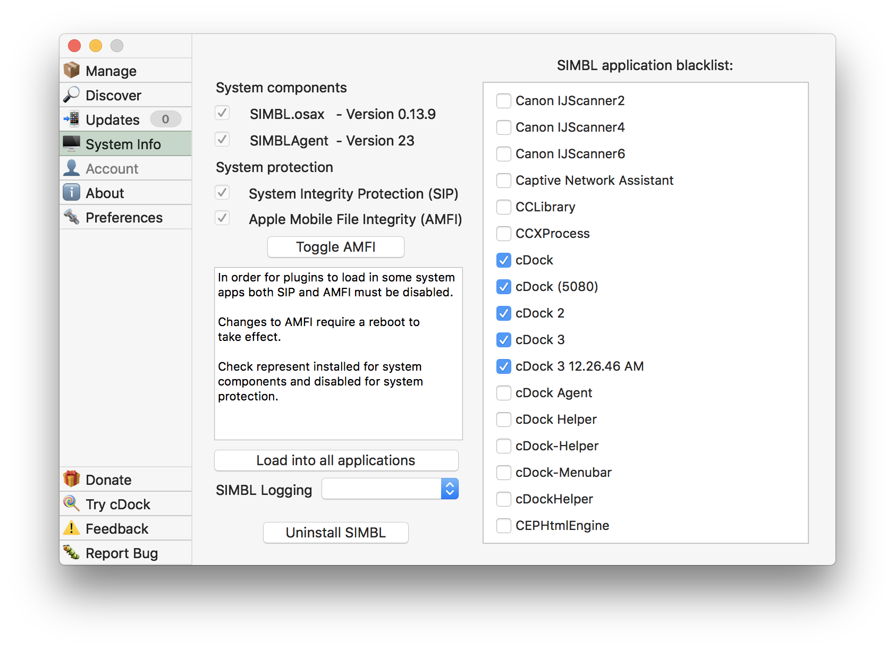
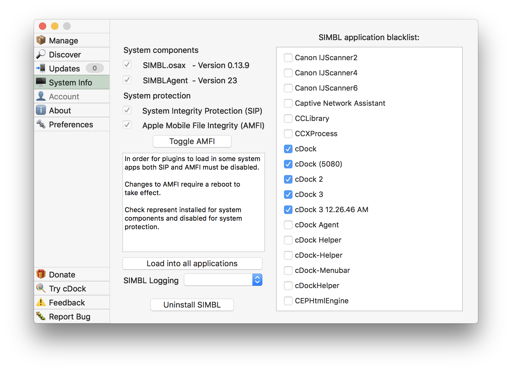

MacForge
Downright amazing plugin manager for macOS
MacForge lets you discover and manage awesome plugins to enhance your macOS experience. There are dozens of plugins to discover and you can even create your own.
The selection of plugins offered through MacForge is always expanding so give it a try and find out what you've been missing!


 
